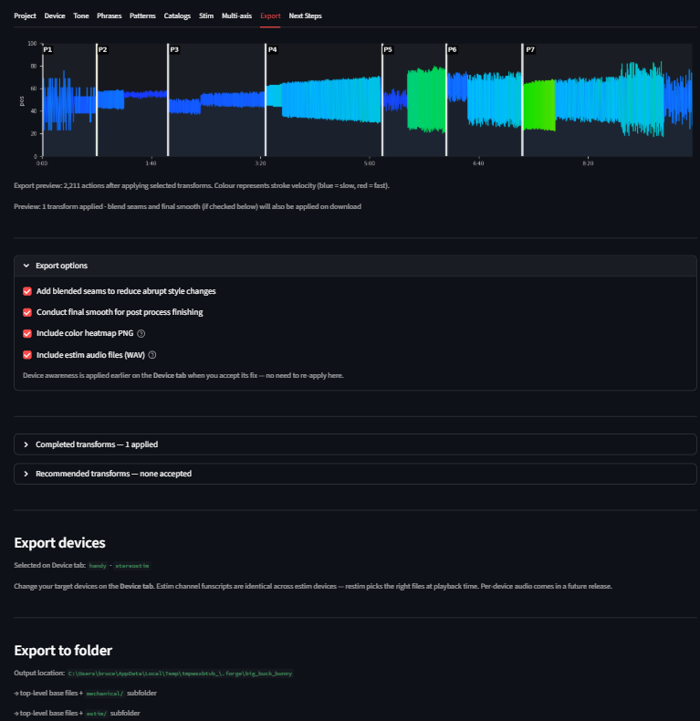

Export¶
The Export tab is the last stop in the FunscriptForge workflow. It writes the final funscript — and any estim channel files — into your output folder, organized into subfolders by device class.
Layout¶

The Export tab. Pick devices, review the preview, then Export All.The tab is laid out top-to-bottom in the order you read it:
- Export preview chart — what the final funscript will look like with every accepted transform applied.
- Export options (collapsed) — three optional passes: blend seams, final smooth, device awareness.
- Completed transforms (collapsed) — every transform you applied in the Phrase Editor or Pattern Editor.
- Recommended transforms (collapsed) — auto-suggested transforms for phrases you have not edited.
- Export devices — pick which devices you want files for. Mechanical is one checkbox; Estim is five.
- Export to folder — the Export All button and the Open folder button.
Export preview chart¶
A static visualization of your funscript with every transform applied. This is what will be written to disk. The chart updates automatically as you accept, reject, or edit transforms in the expanders below it.
Export options¶
Checkboxes, all on by default:
| Option | What it does |
|---|---|
| Blend seams | Detects high-velocity jumps at phrase boundaries and applies targeted smoothing only at those seams. Recommended when adjacent phrases use different transform styles. |
| Final smooth | A light global smoothing pass that removes residual sharp edges. |
| Include color heatmap PNG | Writes a velocity-colored heatmap of the main funscript next to the export. |
| Include estim audio files (WAV) | Renders stereo audio from the estim channel funscripts. Only visible when an audio-capable device is selected (legacy or stereostim). Play these WAV files directly on your estim device — no restim required. |
Completed transforms¶
Every transform you applied in the Phrase Editor or Pattern Editor, in order.
| Column | What it shows |
|---|---|
| # | Phrase number |
| Time | Start time of the phrase |
| Dur (s) | Phrase duration |
| Transform | The transform applied |
| Source | PE (Phrase Editor) or PP (Pattern Editor) |
| BPM | BPM if relevant |
| Cycles | Cycle count if relevant |
| 🗑 | Reject this transform from the export |
Rejecting a completed transform does not undo your editing work — it just excludes it from this export. You can restore it with the ↩ button.
Recommended transforms¶
FunscriptForge suggests transforms for every phrase you have not manually edited, based on the phrase's behavioral tag and BPM.
| Suggestion logic | Transform suggested |
|---|---|
| Pattern label contains "transition" | Smooth |
| BPM below the BPM threshold | Passthrough (no change) |
| BPM at or above threshold, amplitude span < 40 | Range (fit to content) |
| BPM at or above threshold | Amplitude Scale |
You can accept all recommendations at once, or review each one. Clicking ✏ Edit on a recommendation opens that phrase in the Phrase Editor so you can choose something different.
Export devices¶
Two groups of checkboxes:
Mechanical¶
A single Mechanical checkbox covering The Handy, OSR2, and Intiface-compatible Bluetooth devices (Lovense, Kiiroo, etc.). All three load the same single 1D funscript, so there is one checkbox to enable the whole group. Velocity limits used by the device-aware passes come from The Handy (the most restrictive of the three).
Estim¶
Five separate checkboxes, one per estim device class:
| Checkbox | Device class |
|---|---|
| Audio 3-phase — continuous (legacy 2b/312) | Legacy 2b / 312, continuous sine carrier waveform |
| Audio 3-phase — pulse (Tingler/EstimHero/ZC95) — default | Tingler, EstimHero, ZC95, and other pulse-based stereo stim |
| FOC-Stim — 3-phase | FOC-Stim three-phase mode |
| FOC-Stim — 4-phase | FOC-Stim experimental four-phase mode |
| NeoStim — 3-phase | NeoStim three-phase mode |
The channel funscripts in estim/ are identical regardless of which estim device you check — funscript-tools produces all channel files and your estim software picks the ones it needs at playback time.
Audio-capable devices (legacy 2b/312 and stereostim Tingler/EstimHero/ZC95) also get stereo WAV files rendered from the alpha/beta channel funscripts. These are ready-to-play audio files — connect your estim device to your audio output and hit play. No restim required.
Protocol devices (FOC-Stim 3-phase, FOC-Stim 4-phase, NeoStim) do not use audio files. They need restim for real-time device control. The exported channel funscripts are what restim loads — see the Next Steps tab for setup instructions.
Export to folder¶
Click Export All and FunscriptForge writes a self-contained folder you can drop into your media player.
Folder layout¶
For a project named myscript with one mechanical device and at least one estim device selected:
{output_folder}/
myscript.funscript ← top-level base funscript
myscript.heatmap.png ← color-coded velocity heatmap
myscript.mp4 ← copied media + audio + captions
myscript.forgetmpl ← reusable workflow template
mechanical/
myscript.funscript ← single 1D funscript for Handy / OSR / Intiface
estim/
myscript.funscript ← main funscript (some restim modes use it)
myscript.alpha.funscript
myscript.beta.funscript
myscript.frequency.funscript
myscript.volume.funscript
myscript.pulse_frequency.funscript
myscript.pulse_rise.funscript
myscript.alpha_prostate.funscript
myscript.beta_prostate.funscript
myscript.volume_prostate.funscript
myscript.legacy.wav ← stereo audio for 2b/312 (if legacy selected)
myscript.stereostim.wav ← stereo audio for Tingler/ZC95 (if stereostim selected)
myscript.prostate.legacy.wav ← prostate audio (if prostate channels exist)
myscript.prostate.stereostim.wav ← prostate audio (if prostate channels exist)
If you only check Mechanical, only mechanical/ is created and funscript-tools is not run — fast export.
If you only check Estim boxes, mechanical/ is omitted.
If you check neither, the Export All button is disabled.
How estim channels are produced¶
The first source that exists wins:
- Stim Accept files — if you clicked Accept on the Stim tab with a character preset, those generated channel files are moved into
estim/as-is. Fast. - Stim preset configured — if a preset is set on the Stim tab but Accept was not clicked, Export runs the funscript-tools pipeline against the base funscript using your preset.
- No Stim preset — Export calls funscript-tools with its default config (Edger's out-of-the-box settings). You skip the Stim tab entirely and still get the full set of channel files.
You will see a status panel showing each file as it is written:
✅ myscript.funscript (top-level base)
✅ myscript.heatmap.png
✅ Copied myscript.mp4
✅ mechanical/myscript.funscript
✅ estim/myscript.funscript
⏳ Generating estim channels (funscript-tools defaults)…
✅ estim/myscript.alpha.funscript (12.3 KB)
✅ estim/myscript.beta.funscript (11.8 KB)
…
If funscript-tools is not installed alongside FunscriptForge, the channel step is skipped with a warning and the rest of the export still completes.
Open folder¶
Once Export All completes, Open folder opens the output folder in your OS file manager.
The forge log¶
The main funscript includes a _forge_log key in its JSON metadata recording every transform that was applied:
"_forge_log": {
"version": "0.1.0",
"exported_at": "2026-04-11T10:23:45",
"source": "myscript.funscript",
"transforms": [
{
"phrase_index": 3,
"at_ms": 84300,
"transform": "amplitude_scale",
"params": {"scale": 1.4},
"source": "phrase_editor"
}
],
"blend_seams": true,
"final_smooth": true,
"clamp_count": 0
}
This log travels with the file so you always know what was done to it.
Workflow templates¶
The .forgetmpl file written next to your funscript is a reusable record of the decisions you made — tone settings, output targets, device fix strategies, history — without any project-specific data (no paths, no timestamps). Drop it into a new project to start with the same workflow.
Audio synthesis¶
FunscriptForge renders stereo WAV audio files from the alpha/beta channel funscripts using 3-phase synthesis math extracted from restim by diglet48 (MIT license).
Two waveform modes match two device families:
| WAV file | Waveform | Devices |
|---|---|---|
{stem}.legacy.wav |
Continuous sine carrier | 2b, 312, and similar legacy audio devices |
{stem}.stereostim.wav |
Pulse train with cosine envelope | Tingler, EstimHero, ZC95, and similar modern audio devices |
How to use: Connect your audio estim device to your computer's audio output (or a dedicated audio interface). Play the WAV file in any media player — the audio IS the stimulation signal. Sync with video using MultiFunPlayer or ScriptPlayer.
Protocol devices (FOC-Stim, NeoStim) generate stimulation signals in their own firmware and do not use audio files. Use restim for real-time device control with the exported channel funscripts.
Related¶
- Stim tab — choose a character preset; channel files reuse your preset at Export time
- Device tab — see the device limits and device-aware corrections that the Export options apply
- Phrase Editor → — fix individual phrases
- Pattern Editor → — fix all phrases of a given type
- Transforms → — what every transform does